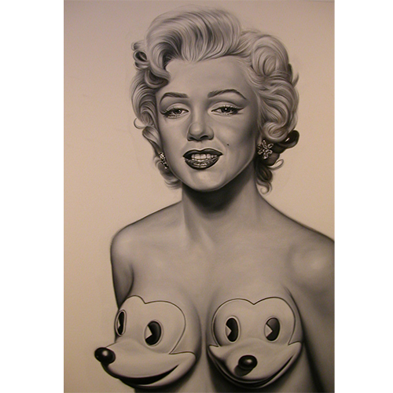
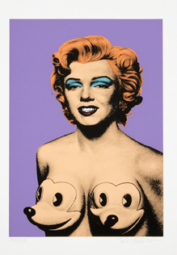

Exhibitions
Status Factory, Opera Gallery, New York, New York, US, September 12–October 29, 2010.
Notes
This work appears in Arrested Motion’s opening and exhibition photographs for Ron English’s Status Factory at Opera Gallery.
This work references Marilyn Monroe; a representative image is available here.
This work references Mickey Mouse, created by Walt Disney and Ub Iwerks.
This composition was later adapted by the artist as a related silkscreen on paper issued as part of the My Way Portfolio, released by English in 2004.
This composition was also reproduced as one of the images included in the Ron English Postcard Set sold by Clutter.
Ancillary Documentation
The following materials document the work’s exhibition history, visual source material, and related printed reproductions.


